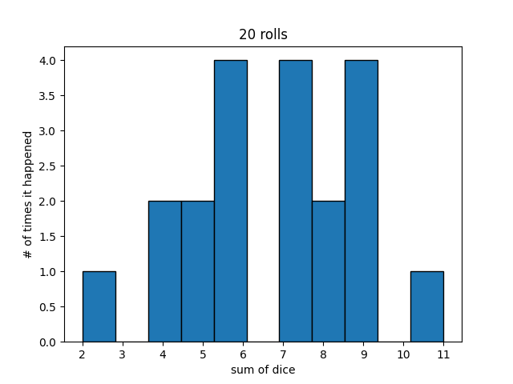
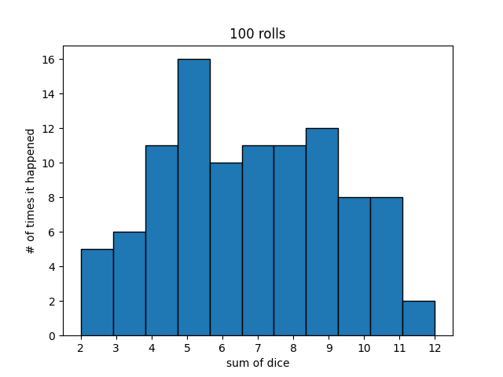
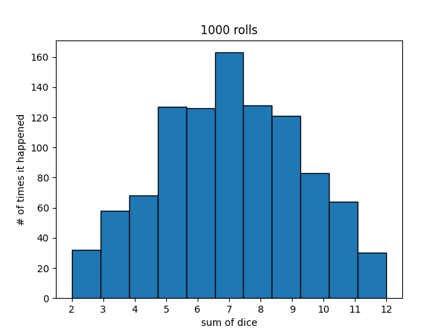
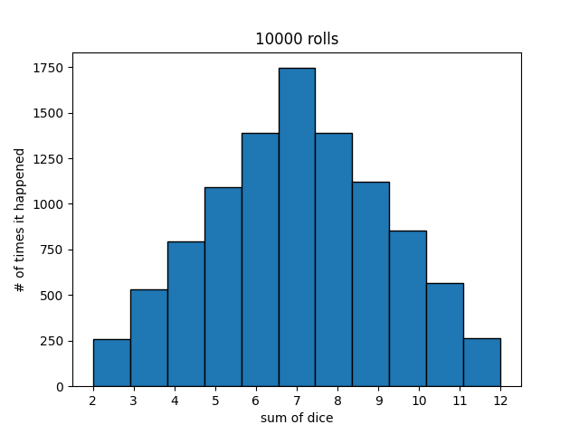

- Thu 08 April 2021
- Teaching Programming
- #dice, #probability, #python
Last fall I started teaching coding concepts at the local grade school on a volunteer basis. Every month I spend roughly 2 hours conducting a workshop for approximately 15 students. We've had a lot of fun and I've enjoyed the challenge of coming up with meaningful lessons and projects. The biggest challenge has been that my students range from 3rd graders to 8th graders. This is rural Montana after all. So most of my effort is spent thinking of good workshops rather than coding prep.
To kick off each workshop, I like to pose a 'random question of the day' that sets the stage for the workshop. At our last workshop, the random question was as follows:
What number are you most likely to get when you roll two dice and add them together?
This question led me to put together this simple project that even my 1st grader seemed to grok.
Roll the Dice
Prerequisites: the student must know their numbers and be able to perform addition of small numbers
Estimated Time: 30 minutes
1. Find a pair of dice and a piece of paper and pencil (or a chalkboard, or a Google doc...)
2. Ask your student(s) some leading questions
- What are all of the possible outcomes of rolling two dice and adding them together?
- Young kids: "What's the biggest number we could get?" "What's the smallest number we could get?" "Can we get every number inbetween?"
- (Answer: 2, 3 ... 11, 12)
- Are all the outcomes equally likely?
- Young kids: "Will we get 2 as often as we get 9?" "Which number will we get the most or are they all the same?"
- (Answer: no, but don't tell them yet)
- What are some ways we could figure out the answer to the last question?
- Some older wiz kids might be able to come up with the theoretical proof
- But we're generally trying to push them towards the idea that we could run an experiment
3. A manual experiment
- Have the student(s) roll the dice and add them together at least 20 times. Keep tally marks of how many times they roll each possible result. You might get something like this:
2 - |
3 -
4 - ||
5 - ||
6 - ||||
7 - ||
8 - |||
9 - |||
10 -
11 - |||
12 -
Note: if you do this neatly with good spacing, you'll end up with a poor man's histogram
- Ask the student which outcome seems to be most likely based on the experiment
- If one of the outcomes never happens, ask the student if they can assume it will never happen based on their experiment - they'll probably respond no!
- What's wrong with our experiment then? Why can't we trust it's results?
- Answer: we need a much larger sample set, i.e. we didn't roll the dice enough times to really get a good idea of what happens
4. A computer experiment
- We'd like to roll the dice 10,000 times so that we can feel good about our experiment
- Ask the student if they're up for it 😂
- Instead of doing the physical experiment 10,000 times, we'll have the computer do it for us...
- Visit https://replit.com/@avoncoders/RollTheDice to get my code for the experiment and click
Forkin the upper right - You may need to create an account - you can do Google single sign-on
- Once you have your own copy of the code, click the green run button in the top middle
When you run the code, it will perform the same experiment with 20 rolls, and produce a dubious result like this, similar to the manual experiment:

- Now, press the grey
Stopbutton in the middle top. Change the value of numberOfRolls to e.g. 100. PressRunagain - Repeat the above step for e.g. 100, 1000, 10000 and see how the results take shape
  
5. Conclusions
- Clearly, not all outcomes are equally likely
- Which number is the most likely? 7
- Why? Because there are many more ways to get a 7 then there are to get a 12. To roll a twelve, you need two sixes. To roll a seven you could have any combination of (1, 6), (2, 5), (3, 4)
- If our experiment doesn't have enough trials/samples, we can't trust the result. If we ran the experiment infinite times, we'd have the exact probability/chances of each outcom
- If your student(s) have played Settlers of Catan, they'll now understand why you move the Robber whenever a 7 is rolled, and why the tiles associated with 6 and 8 are highly coveted
- The computer was able to run an experiment that would've taken us days in less than a second. That is amazing.
After going through this with my first grader, I asked him "If someone approached you on the playground and offered to pay you a dollar for guessing the sum of two dice they were going to roll, what would you guess?" His answer "I'd definitely go with 7". "Always?". "Always." Proud parenting moment there.
Bonus
What are the true probabilities of each outcome? The 'theoretical' approach to solving the problem is as follows:
- There is one way to make 2: (1-1)
- There are two ways to make 3: (1-2) and (2-1)
- There are three ways to make 4: (1-3) and (2-2) and (3-1)
- There are four ways to make 5: (1-4) and (2-3) and (3-2) and (4-1)
- There are five ways to make 6: (1-5) and (2-4) and (3-3) and (4-2) and (5-1)
- There are six ways to make 7: (1-6) and (2-5) and (3-4) and (4-3) and (5-2) and (1-6)
- There are five ways to make 8: similar logic to ways to make six
- There are four ways to make 9: similar logic to ways to make five
- There are three ways to make 10: similar logic to ways to make four
- There are two ways to make 11: similar logic to ways to make three
- There is one way to make 12: similar logic to ways to make one
There are a total of 36 outcomes when you roll two dice. 6 of those outcomes will sum to 7, so 6/36 or 1/6th chance of rolling a seven. The full list of probabilities is as follows:
| 2 | 3 | 4 | 5 | 6 | 7 | 8 | 9 | 10 | 11 | 12 |
|---|---|---|---|---|---|---|---|---|---|---|
| 1/36 | 1/18 | 1/12 | 1/9 | 5/36 | 1/6 | 5/36 | 1/9 | 1/12 | 1/18 | 1/36 |